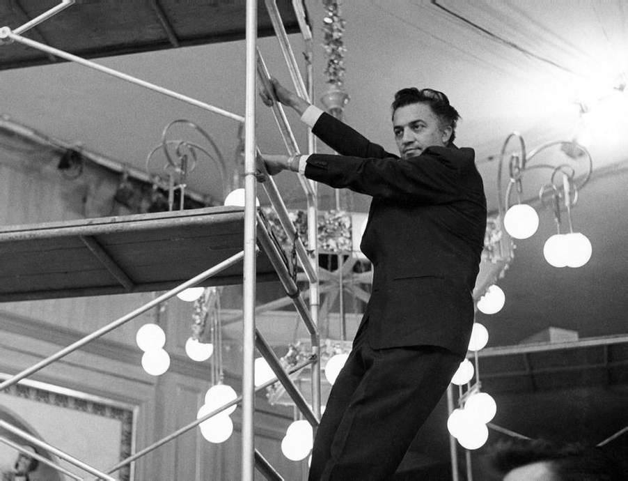
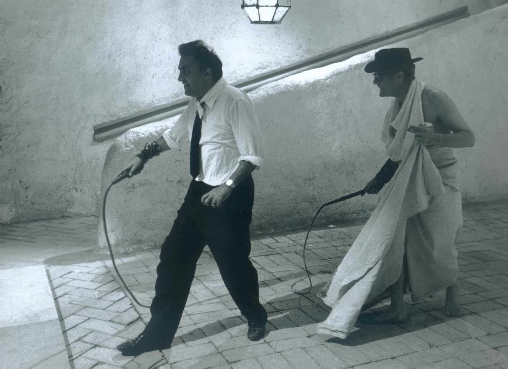
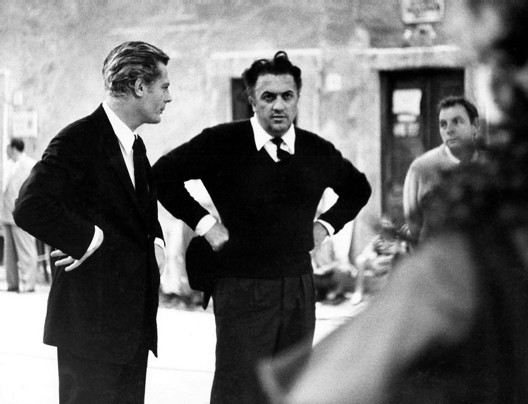

'8 1/2': Federico Fellini's Daring, Self-Reflexive Masterpiece as a Most Intimate Exploration of Cinema
By Sven Mikulec
Working in the film business all the way since the forties, when he started out writing screenplays and
soon
apprenticing for the great
Roberto Rossellini, Federico Fellini achieved a major international breakthrough with his 1960 Palme
d'Or
winner
La
Dolce Vita, a
brilliant study of the contemporary Roman social elite and the celebrity culture as a whole. What
followed
was
the
troublesome,
paralyzing experience of trying to find an answer to that crucial question familiar to all artists who
manage to
achieve their
breakthrough and gain much-craved recognition: what next? He was on top of the world. After this
enormous
success,
Fellini felt he
needed to make a far more personal film, to turn his gaze from his surroundings to himself, but couldn't
quite
decide what the next
project should be about. It was actually as early as autumn 1960 that the filmmaker started developing
the
idea
for
his new feature,
an idea of a man struggling to deal with his problems and move on with his life, first and foremost a
comical
story
of a person trying
to come to terms with the banality of his life and the obstacles in his profession. Fellini couldn't
figure
out
who
this man was
supposed to be, toying with the idea of making his hero a disillusioned writer or theatrical impresario.
He
finally
settled on making
him a filmmaker, slightly reluctant as he was aware what kind of parallels the audience and the critics
were
bound
to draw. The
obviously autobiographical and highly personal result of these musings was 8 1/2, an intriguing, honest,
intellectually stimulating
comedy drama which is now considered one of the landmarks of the 20th-century cinema. Fellini not only
succeeded
in
not
disappointing the audience whose attention he got thanks to La Dolce Vita, but created probably the best
and
most
intimate film on
the subject of filmmaking ever made. The connection between the film's protagonist, a filmmaker called
Guido
Anselmi, who is
unsure of what to do with a science-fiction epic he had prepared to make, and Fellini himself was more
than
obvious
even to the least
perceptive viewers, just like it's safe to assume Guido's anxiety, insecurities and struggles with
inspiration
were
Fellini's own. When I
said I didn't even know what the plot was, journalists thought I was telling one of my habitual lies,”
explained
Fellini later. Instead,
for me, it was the truth.Fellini sorted his next film out in his head, set it up, but then couldn't go
on
making
it because he couldn't
remember the story anymore.From the torturous creative block, however, an original, self-reflexive,
thoughtful
movie was born.
This fantastic, enchanted ballet, a magical kaleidoscope,
as the filmmaker described it, was
developed
from
the
idea Fellini
struggled with for years, but ended up written in a collaborative effort by Fellini, Ennio Flaiano,
Tullio
Pinelli
and Brunello Rondi, with
Nino Rota's musical score and a fantastic lead
performance
from
Marcelo
Mastroianni as
the troubled artist.
Although initially considering to call it La bella confusione (The Beautiful Confusion) on co-writer Flaiano's suggestion, Fellini finally landed on 8 1/2, as he felt it was more appropriate keeping in mind the autobiographical aspect of the film. By the time he started making it, Fellini had already made six feature films, two short films and shared one directorial credit with Alberto Lattuada, which was altogether, according to Fellini's peculiar counting, seven and a half pictures. The chosen title further advocates the thesis the picture was the most personal one a filmmaker can really make. The brilliant part of 8 1/2 is not just that it's a touching and passionate exploration of filmmaking in general, but that the movie deals with its own creation, as Guido Anselmi conducts screen tests for roles in the very film he's a part of, just like Fellini's camera placement helps stress the inseparability of the portrayed filmmaker and the filmmaker creating the portrait. Enchanting, sometimes a bit befuddling but in the best way possible, the film is an intoxicating dance between reality and imagination, carried by Mastroianni with the help of the wonderful Anouk Aimée, Sandra Milo and Claudia Cardinale, with confident and imaginative camera movements handled by Fellini and cinematographer Gianni di Venanzo, whose work with Michelangelo Antonioni, Francesco Rosi and Fellini made him one of the leading European masters of the camera of the middle part of the century.
Fellini's film was shown out of competition at Cannes in April 1963, and in July it won the Grand Prix
of
the
Third
Moscow International
Film Festival, where eight thousand people attended the screening. Its
deserved
recognition
also came from across the Atlantic, as 8 1/2 received Academy Awards in
the
Best
Foreign Film and Best
Costume Design categories, with additional nominations for the director, screenplay and art direction.
The
critics
loved it, and still
continue to show their appreciation of Fellini's vision, execution and the bravery needed to bare his
soul
like
this. It's no surprise that
some of the fiercest advocates of 8 1/2 come from the filmmaking sphere. The great Guillermo del Toro,
for
instance,
stated he felt
the film speaks as much about life as it does about art,
calling it a lustful, sweaty, gluttonous
poem to
cinema.When it comes
from the mouth of one of the most original authors of today's cinema, it carries a certain weight, but
del
Toro's
appraisal is just the
tip of the iceberg. 8 1/2 is an introspective, daring masterpiece conducted by a true, irreplaceable
maestro.
A monumentally important screenplay. Screenwriter must-read: Federico Fellini, Ennio Flaiano, Tullio Pinelli & Brunello Rondi's continuity screenplay for 8 1/2 [PDF]. (NOTE: For educational and research purposes only). The DVD/Blu-ray of the film is available from the Criterion Collection. Absolutely our highest recommendation.
While in Rome, Studs Terkel interviews Federico Fellini on the set of his film 8 1/2. The director gives insight into his works, his credo, and his faith in man. Terkel probes into the recurring theme of all his films and delves into Fellini's creation of the character of Steiner from La Dolce Vita. Along with this interview, excerpts from conversations with the following people are included: Italian actor Marcello Mastroianni, French actor Alain Cuny, the writer Nelson Algren, and Fellini's associate Mario Del Vecchio. All provide their interpretations as to why the character of Steiner did what he did in La Dolce Vita. — Fellini talks with Studs Terkel on WFMT; 1962, The Studs Terkel Radio Archive
Look, Signor Fellini, the respectable lawyer might recognize himself in Guido all right, but the fact remains that Guido is Fellini. Come on, it's like a last will and testament, that movie, a final reckoning—leaving aside the fact that making a final reckoning of one's life at the age of forty-three seems to me to be rather too early.
Why? Better to make it early than late, when there's no longer time to change anything. At forty-three it's not a bit too soon to make a reckoning of one's own life. That's exactly why the movie did me so much good. I feel somehow liberated now, and with a great urge to work. The movie—8 1/2—is like my last will and testament, you're right, and yet I don't feel drained. On the contrary, it enriched me. If it were up to me. I'd start making another tomorrow morning. Honestly. And of course if they say. How clever. Fellini, what talent.it gives me a lot of pleasure. But it isn't compliments I'm looking for with 8 1/2. I want… I want this feeling of liberation to communicate itself to anyone who goes to see it. so that after seeing it people should feel more free, should have a presentiment of something joyful…
Good Lord Signor Fellini, don't try to tell me you care about the people who go to see your movie. If there's a man who couldn't care less about his neighbor and is devoid of evangelical spirit, it's you. Let's drop it, for goodness' sake, and concentrate on the important admission: the reckoning you make in 8 1/2 is a reckoning of your own life and not of some imaginary person.
Ugh, what a little pest. What do you want me to say. So many things… of course… are true. What happens in the movie has happened to me to a certain extent… There was a moment when I no longer knew what to do, could no longer remember a thing. I would work with Flajano, Pinelli, Rondi, without any conviction. I had the Saraghina episode, the one about the cardinal. But they were isolated things, floating in the void, and I could no longer remember a thing, honestly. The production team used to stand there, looking at me with imploring, suspicious eyes, and I had a strong desire to say to the producer. Let's drop it, let's forget about making this movie.'' Then it appeared to me that my bewilderment was perhaps an invitation, help from some invisible collaborator who was saying to me: Tell the truth, tell about this.'' And so I got the idea of making a movie about a director who wants to make a movie and can no longer remember what it is about. Yes, Guido Anselmi is only experiencing what I also partly experienced in this movie. And the conclusion, if you can call it a conclusion, is this: we must never strain ourselves trying to understand, but try to feel, with abandon. We must accept ourselves for what we are: this is what I am, and this is what I'm content to be. I want to stop building myths around myself, I want to see myself as I am: a liar, incoherent, hypocritical, cowardly… I want to have done with making problems out of life: I want to put myself in a position where I can love life, where I can love everything. I'm still talking about Guido, of course… And after all Saint Augustine said the same thing, Love, and do what you want.'' Well, he didn't put it like that exactly, but more or less…
Another magnificent interview with Fellini, courtesy of Huntley Film Archives.
 Open YouTube videoFellini attached a note to himself below the camera's eyepiece which read, Remember, this is a comedy.” A joy to watch: 8 minutes on the set of Fellini's 8 1/2.
FELLINI: A DIRECTOR'S NOTEBOOK (1969)
Fellini discusses his views of making motion pictures and his unorthodox procedures. He seeks inspiration in various out of the way places. During this film viewers go with him to the Colisseum at night, on a subway ride past Roman ruins, to the Appian Way, to a slaughterhouse, and on a visit to Marcello Mastroianni's house. Fellini also is seen in his own office interviewing a series of unusual characters seeking work or his help.
 Open Vimeo videoFederico Fellini originally intended for 8 1/2 to end with a surreal sequence in a train car-sets were built and footage was shot, but all that remains are still photographs. From this starting point, Mario Sesti's fifty-two-minute documentary details the story of that original ending and how it came to be replaced.
FELLINI: I'M A BORN LIAR (2002)
A look at Fellini's creative process. In extensive interviews, Fellini talks a bit about his background and then discusses how he works and how he creates. Several actors, a producer, a writer, and a production manager talk about working with Fellini. Archive footage of Fellini and others on the set plus clips from his films provide commentary and illustration for the points interviewees make. Fellini is fully in charge; actors call themselves puppets. He dismisses improvisation and calls for availability.” His sets and his films create images that look like reality but are not; we see the differences and the results.
1965 Playboy interview with Marcello Mastroianni during the early days of the cultural revolution.
For 35 of his 40 years, Marcello Mastroianni was a name virtually unknown (and certainly unpronounced)
outside
of
Italy, where he
had earned something of a reputation as a promising actor on the Roman stage, and as a competent, if
unsensational,
second
lead in third-rate Italian movies. Then, in 1960, filmmaker Federico Fellini decided that Mastroianni's
rather
dissipated good looks
and worldly ways would be perfect for the part of a sensitive but weak-willed Roman journalist who ends
up a
member
of the
decadent café society he sets out to sensationalize in print. Fellini was right. The picture was La
Dolce
Vita,
and
it made
Mastroianni, in his 45th film, a major matinee idol almost overnight. Though still tongue-twistingly
yclept
(Mar-chello Mah-stroyah-nee), he has since gone onward and upward, in a succession of versatile
variations
on
the
laconic-Latin-lover role, to become
one of international filmdom's reigning male sex symbols, and to set a singular new style in movie
stars—the
nonheroic hero, a
kind of modern intellectual Everyman. Consummately portraying such tortured contemporary types as a
world-weary
author (in La
Notte), a cuckolded husband (in Divorce—Italian Style) and a cynical, soul-searching movie director (in
8
1/2),
he
has come to
epitomize for many the plight of modern man himself,
in the words of one critic, loveless,
faithless,
rudderless,
spiritually
anesthetized and immobilized, whirled along in the swift and shifting crosscurrents and powerless to
influence
or
arrest the order
of events; incapable either of disciplining his desires or of satisfying his needs, let alone those of
his
fellow
man.Despite—or
perhaps because of—his ambivalent image of inward impotence and predatory potency, Mastroianni exudes a
charismatic
magnetism that seems to bring out the maternal, as well as the mating, instinct in a vast international
following of
female fans
who see him as both son and lover; both as a helpless, all-too-human little boy and as a suave,
self-assured
man
of
the world.
Not surprisingly, in view of the remarkable verisimilitude with which he manages to invest his movie roles, the resemblance between the real-life Mastroianni and his reel-life counterpart is far more than skin-deep. It was in the hope of illuminating both that we called on the actor at his home in Rome with our request for an exclusive interview. Having heard that he is far from fond of being buttonholed by journalists, we were prepared for the unconcealed disinclination he displayed at first. Why should your readers care what Mastroianni thinks?he asked. We assured him that they would; but he was still evasive and noncommittal. After a few more days of telephonic pursuit, however, he finally consented to see us on the set of his new picture, Casanova 70 (in which he plays a latter-day Lothario afflicted with impotence which he can overcome only by staging his seductions where there's an imminent danger of discovery). We began our conversations on the spot, speaking in Italian. After an hour, we were just getting warmed up, so our talks continued on and off for the next week—on the set; in his downtown apartment, where we met his wife of 15 years and their teenage daughter; at his lavish new home, still under construction, on the outskirts of the city, where we sat on the lawn amid a clutter of statuary and antique mosaics which he couldn't decide where to put; and on a meandering stroll down the cobbled side streets of old Rome, with periodic stop-offs for espresso, and a plate of pasta at the Cafe Rosati, a venerable artists' and writers' hangout on the Piazza del Popolo.
We found him to be a fascinating subject: urbane, ironic, articulate, introspective, insightful, outwardly serene but charged with a banked intensity, seemingly suffused with ennui yet somehow still boyishly disarming. Like the characters he so often plays, he is a complex, enigmatic and paradoxical man.
For four years you've been considered the biggest and best male star in Europe, and a major box-office attraction around the world. How do you account for your change of fortune, after more than a decade in minor roles?
I was lucky enough to get a film that had a meaning to me personally—Fellini's La Dolce Vita. The public also liked it, which naturally pleased me. But I was concerned first with myself. I looked in the mirror one morning and said: You have only so many good years left. From now on out, you do only parts that involve you personally, that have meaning in your life and the lives of the people around you.Since then it's been a boom.
When you speak of personal involvement in your parts, do you mean that they're autobiographical in a sense, that you're actually like the characters you played in La Dolce Vita and 8 1/2?
Yes. I did those two Fellini films not as an actor but as a man. I took part because I needed, as a man, to realize myself through them. They are the best mirror of my real self. It's not that I play myself, actually, but rather more that I am looking for myself in the roles. There is this synthesis between the roles and the real me—as if I'm trying myself out in them. Who knows which one is more authentic? Each one seems so at the time.
All the films you've made, in one way or another, are about weak men—psychologically, socially and often sexually impotent. Is that you?
Yes and no. It's part of me; and I think it's part of many other men today. Modern man is not as virile as he used to be. Instead of making things happen, he waits for things to happen to him. He goes with the current. Something in our society has led him to stop fighting, to cease swimming upstream.
What is that something?
Doubt, for one thing. Doubt about his place in society, his purpose in life. In my country, for example, I was brought up with the thought of man as the padrone, the pillar of the family. I wanted to be a loving, caring, protective man. But now I feel lost; the sensitive man everywhere feels lost. He is no longer padrone—either of his own world or of his women.
Why not?
Because women are changing into men, and men are becoming women. At least, men are getting weaker all
the
time.
But
much
of this is man's own fault. We shouted, Women are equal to men; long live the Constitution!
But
look
what
happened. The
working woman emerged—angry, aggressive, uncertain of her femininity. And she multiplied—almost by
herself.
Matriarchy, in
the home and in the factory and in business, has made women into sexless monsters and piled them up on
psychiatric
couches.
Instead of finding themselves, they lost what they had. But some see this now and are trying to change
back.
Women
in England,
for example, who were the first to raise the standard of equality, are today in retreat.
How about American women?
They should retreat, but they don't. I've never seen so many unhappy, melancholy women. They have liberty—but they are desperate. Poor darlings, they're so hungry for romance that two little words in their ears are enough to crumble them before your eyes. American women are beautiful, but a little cold and too perfect—too well brought up, with the perfume and the hair always just so and the rose-colored skin. What perfection—and what a bore! Believe me, it makes you want to have a girl with a mustache, cross-eyes and runs in her stockings. I got to know a few of them when I was there, but I swear it was like knowing only one woman. Geraldine Page was the only exception—and an exciting one.
Are Italian women different?
Thank God, yes.
In what way?
Their smell, for one thing.
Their smell?
Yes, their body fragrance. Now, I'm not playing my role as a lover here, but I believe I'd be able to tell an Italian woman from any other woman, even in the dark, just by her natural fragrance. It's a sort of homespun odor. I love it.
Apart from her fragrance, how is she different from American women?
She's not afraid to be a woman—not yet, anyway. But what happened to women in America is beginning to take place in Italy, too, and I don't like it. I don't feel tenderness toward this new kind of women. I wouldn't even want to have children by them. I want women to have all the faults and weaknesses they always had. I adore them, but we must keep them in their place. It's presumptuous for a woman to show me she is a doctor of mathematics. Comptometers can do that. What's more subtle and difficult is to know how to make a man feel important.
You don't think women have the right to a career, to compete with men in the professional world?
Of course, they must evolve—but not away from being women. At the same time, I admit we have to do
something
with
them
besides give them babies. In Italy, women now have fewer children and do less housework than ever. This
makes
them
bored and
a terrible weight on men. Now, I like to have a woman hang on—but not to suffocate me. So today she
needs
some
kind
of
occupation, and it's right for her to want to be on man's level. My logic admits this—but my instincts
tell
me
to
watch out. A man
like myself fears this contemporary woman.
She is conquering something important, and her
evolution is
exciting.
But man is
conquering nothing; indeed, he's losing his power, his virility, even his intelligence.
Are you saying this is true of all men, or just Italian men—or perhaps only yourself?
Well, so much depends on the emotional climate in which you were raised. You're American. I speak of myself and my own country—an old country. I remember my grandfather. He lived to be 90. I used to watch him and admire his authority. Where has all that gone? What's happened to that kind of man? Whatever it was that buried him, it took with it a whole era, a whole way of life. It left women doing some of the things he did; and this causes me deep anxiety. But perhaps this is an era in which we all feel lost—a period of transition where the only thing that keeps man going is habit. But here again, women have the advantage. They believe in love, and we men don't even believe in that anymore. Once men dueled over women, grand dukes fell at the feet of ballerinas and whole armies chased them. But when a man chases a woman today, we say: What luck—he can still run.” We seem to have forgotten that love can be a most extraordinary support for a man. A man in love is master of the world. Even though love costs him pain, it's a marvelous kind of suffering.
Does it have to cause suffering?
Yes. And it almost always ends the same: with disenchantment. The exception is rare, rare.
Still, your friends say that you fall in love easily.
That's true—but only on the level of fantasy. In my imagination, I work myself up to a fantastic and sublime passion for a woman. Then I go out with her. But since I've created such an extraordinary love in my mind—which isn't real and exists only within myself—I soon realize she isn't exceptional after all. Then I get tired and go looking for another one. You understand? I've always felt I lacked the capabilities of real, serious love. For me, it's always a game in which I pretend to love. And try to make it exceptional. Maybe one should love without imagining too much. What's ironic is that the same thing works in reverse. Say a woman meets me and finds me attractive. She imagines me to be like my screen image—the great lover. But I'm not a lover type, not in the conventional sense, anyway. There's no erotic charge in me. In any case, I can't assure a woman that I'll be able to give her what she wants, because what she wants—whatever it is—isn't really me.
Has any woman ever really understood you?
No, never. But as I was saying, just because you're a famous movie star, women think you must be a passionate and tireless lover—especially if you're Italian. The demands are terrible. Not even a superman could meet them. I wish women would like me in that context which most resembles me. I've always tried to do screen roles that weren't for studs or bulls. You've seen the films I've made: Bell' Antonio, La Dolce Vita, 8 1/2. None of the protagonists is a big lover who can take a woman in a room for a night and make endless love, wham-bam behind a door. I think the men in my films are much more normal, even though they possess —what?—a certain confusion. And I've always sought roles that weren't domineering over women; I'm just not that type.
Yet one critic has called you the Clark Gable of the Sixties.
Do you think the title fits?
If anything, I'm the anti-Gable. He was the type of hero who was popular yesterday. Gable and others, like Gary Cooper, played strong, clean men, full of virtue and honesty. They were decisive and solid and knew where they were going. Or they lived in a world which presumed that a he-man always knew where he was going. But today we don't know where we're going. As I explained before, the system of virtues and morals used by our fathers just doesn't work anymore. It ceased working some time ago, but now we admit it openly. We admit our weakness, or at least our confusion. As Antonioni said, Who's a hero under the atom bomb? Or who isn't one?So in my roles I reveal that I am simply human; this confession of the human condition is the difference between myself and Gable. In this sense, I play myself. He played a myth—a myth that was credible yesterday but I think not today. If Gable were to begin again with the same image, I doubt he would become King Gable.
Alberto Moravia has compared you to Dino, the protagonist of his novel 'The Empty Canvas.' He says you
both
epitomize
the neocapitalist hero, alienated from himself and his society.
Do you feel this is true?
In many ways, yes. But I don't think I'm any kind of hero, neocapitalist or otherwise. If anything, I am an antihero or at the most a nonhero. Time said I had the frightened, characteristically 20th century look, with a spine made of plastic napkin rings. I accepted this—because modern man is that way; and being a product of my time and an artist, I can represent him. If humanity were all one piece, I would be considered a weakling. I hate to keep bringing up my grandfather, but I can't help comparing myself to him. He was a hero to me in a way. I try to be like him, but it's no use. I have a farm at Lucca, where the modern world has not yet changed the order of things. There I put on a velour jacket like they used to wear, and the servants say, Buon giorno, Padrone.I kid myself into thinking I'm the man my grandfather was. I put on the clothes and I play. I act at being a man. The illusion gives me a sense of belonging to the past—which is very much more real to me than the present.
Why?
It gives me strength—or at least an illusion of strength. I go through certain periods in my life when I am nourished mainly by memories. During recent years I have felt an increasing desire to go backward, to plunge myself into my infancy. Every other day I go to see my mother, and sometimes I even sleep in her home. It's not just seeing my mother: It's a drive to return to the past, as though a man such as myself, dedicated to remembrance of dreams, could love only two things really well: his own mother and his children—the past and the future. The present is something you flee through as quickly as possible. So whatever images I cling to, I'm not a hero—on or off the screen. My type just happens to have come into fashion.
But the nonheroic hero is certainly nothing new in films, is he?
Isn't he?
Wouldn't you call Charlie Chaplin a classic example of this type?
No, because he wasn't a hero but a character comedian, even though he was a leading man. Charlot was the frontrunner of the nonheroes, who have since become a common tribe. We follow, without any of his genius, and not always laughing. Today the public prefers the noncomical nonhero, just as they prefer the imperfect beauty of some of their new heroines—Jeanne Moreau, for example.
Do you find her kind of beauty attractive?
Very much. Moreau is a fragile, desperate woman—but strong at the same time, because she's a real woman, all of her. She's stupendous also where it counts—jealous, demanding, indulgent. She lives and lets live, without confusing love and eternity. She's one of the few women I know who would be worth falling in love with. It doesn't matter if she doesn't have perfect beauty; she's beautiful all the same. Have you seen the bags under her eyes?
Like yours.
Yes. Maybe there's an affinity between our two natures.
Do you find Sophia Loren equally attractive?
No. She's also very much a woman, but she hasn't Jeanne's desperation. She has a femininity, a maternal sense, that is ancient in woman but rare to find today. She has a force one can find in one's own mother, a moral strength that makes her fascinating. I'd say Sophia is a type of woman that in a short while will no longer exist, while Jeanne is of today. I feel attracted to both of them— but in different ways.
To Sophia as a mother image and to Jeanne as a lover?
To Sophia as a friend. I've taken her to my mother's home many times. She's the only actress I've been tied to out of affection for more than ten years. In the movie world, that's quite a long time.
Are there any other actresses you admire?
Greta Garbo. I met her on a recent trip to New York. She invited me to visit her in her apartment. I
suppose
she
was
curious about
me. She is a very sympathetic and extraordinary woman. We talked through an interpreter. The only thing
I
understood
directly
was when she looked at my shoes and said: Ah, Italian shoes—beautiful.
I was very embarrassed,
because
they
were
English, not
Italian. But to make her happy I said Yes.”
What else did you talk about?
Our conversation was broken off by a harebrained American woman who said to Garbo, I saw you in films. How beautiful you were in your epoch.This made Garbo so angry that she got up and left. She was right to do it. That woman should never have said that. If she didn't understand that much about Garbo, she was stupid. An hour later Garbo phoned me at a cocktail party to say she was sorry to have left that way, and that she liked meeting me. I understand her. She feels very alone, and all her life she's been afraid of people and crowds.
As one who's been mobbed more than once by female fans, do you feel that way yourself?
Well, most of that is just publicity. I'm not actually assaulted by women, especially in Italy. There have been a few hysterical mobs, of course. But mobs generate their own hysteria, and it doesn't really have anything to do with the target of their frenzy.
You didn't say whether you like it or not.
Of course I don't like it.
Isn't public recognition one of the reasons you became an actor?
Not that kind of recognition. Not even applause, or the praise of my peers. No, I became an actor
because it
exalted
me, even as a
child. There is no joy quite so fulfilling, so exhilarating as the extraordinary emotion one feels when
performing.
It's equal to the
thrill you get with a woman. Nothing else can compare with it. Normally—and I think most actors are like
this—I
don't feel
complete except when acting. After it's over, I'm incomplete again. Not working is terrible. But at the
moment
when
they cry
Action!
everything you've thought about, everything you've tried to foresee, suddenly—in a
flash—comes
together
like an
electric spark. Zzzst! It's the act of creation, when all the elements are fused.
Would you call yourself an instinctive actor?
I often say I am, because it amuses me; it's convenient to say it; otherwise people want to know what
system”
you
use, how you
think, and your reasons. Since all that annoys the hell out of me, I say I'm an instinctive actor.
But
I
tell
you
as a friend, it's not
so. It can't be so. I have to foresee, to plan everything, big and little.
Fellini has said that you have a supercharge of animal heat
that invests your roles with life even
before
you
speak.
Wasn't he talking about your acting instinct?
Sure. But what sort of animal does he mean? An actor isn't a trained horse that goes into its act, because a horse can't act. The personage must mature within you. But not by study. I don't study a damn thing. It's my subconscious that does the work. Once I've read the script, and once I've isolated the character—which I always seek to resemble me somewhat—it begins to grow within me during the day, no matter what I do—like a parasite. So little by little I assimilate it—or vice versa. It comes through the instinct, yes, because this is inevitable. But not through study. Take an example: If I have to play the part of a madman, I don't go to an insane asylum to study madmen. This doesn't accomplish anything; it will lead to a mere imitation. If your character in the script is written well and involved in real situations, the madness of the role will come out by itself. It will mature within you, animating your voice and your body of its own volition.
That sounds like the Method.
I don't know anything about methods or systems or schools. But you must make sense of all the elements
that
motivate
the mind
of a character. You must select the best in order to better reach the public, calculating and using the
effect.
When
I prepare for a
scene, I reflect much on what I have to do. Much. I study the gestures and facial expressions,
everything.
This
is a
technical job, not
instinctive, and it's something an actor must do. Similarly, a painter doesn't work by instinct alone;
he
calculates
his colors before
freeing himself into creative action. An artist, like an actor, must meditate deeply what he
does—perhaps
leaning
more on instinct
than on culture. That's the main point. I'm not a cultured actor. I'm more instinctive than cultured.
When
the
chucker goes
chock,
I let myself go, and from there—bzzzt!—I'm off. Then something unforeseen happens, some
small
thing
that
gives you the slightest shudder. Something new and unexpected occurs; it's that which gives you a sense
of
creation.
Do these unforeseen occurrences include taking liberties with the script?
Well, I shouldn't say this, but I never study the lines I recite. I read the script two or three times, think about it a little, then I throw it away and can never find it again. Then, at the last minute, I say to the assistant director: What's my line?” The exact words are not important; that's a mechanical element. I never say the exact dialog. Often I change the words. I like to abandon myself to the part; if the character has matured sufficiently within me, the words come out by themselves. So there's a kind of truth harnessed at the last moment, as it once was in the commedia dell' arte, when the actors improvised their lines on the stage.
You began your own career as a stage actor; but you haven't done a play in nine years. Why not?
Lack of good plays. Where is the avant-garde theater in Italy? Osborne, Ionesco, Miller—always the same. Actually, Miller asked me to do After the Fall. When it didn't come off, I wasn't upset. I'd already played the role—and better, too—in 8 1/2.
You feel that Guido, the director in Fellini's 8 1/2, is the same role as Miller's Quentin—only better?
Don't you think it has more humanity—that it's more universal? I do. Also, Guido says more about the loneliness of the intellectual, his incapacity to love and communicate with others, and the resultant aridity that's the terrible burden of our lives today.
Do you feel, then, that 8 1/2 is a work superior to After the Fall?
Much superior. Not only because of content, but also because it's in cinema. If you know what you're doing, if you have means and the talent, films can be invested with more humanity than theater. They can reach deeper into human beings.
But as a performer, don't you miss the applause of a live theater audience?
No, why should I? Does a painter need immediate applause? Isn't eventual acclaim enough? Besides, after creating a role, you want to do something else—not the same thing night after night. An actor needs to renew himself. But I don't mean I'm antitheater. In fact, I am going to do a musical shortly in Rome, on the life of Rudolph Valentino.
Can you sing?
I'm going to try—even though they say I'm tone deaf. What does it matter? I want to have some fun. Also, I like the prospect of finding new dimensions in the personality of Valentino. Let's see if there isn't more to him than the myth of the great lover. The success of a type like Valentino or Marilyn Monroe is inevitably dramatic, tragic, grotesque—because the private lives of these people are almost always impoverished. Imagine the effort it must have taken for Valentino to convince himself that he was really like his myth—or, even worse, not like his myth. I'm sure he made very little love. That makes you laugh? It makes me cry.
Will your portrayal of Valentino be as self-exploratory as the parts you've played on the screen?
Perhaps. We'll have to wait and see.
Last year, in a dramatic change of pace after your many roles as the world-weary Latin lover, you turned in a remarkable performance as a bearded, bespectacled socialist labor leader in The Organizer. Did you see yourself in this part, too?
Very much so. That film was particularly dear to me. It had a profound human message, and the role of the professor was beautiful.
Are you a socialist yourself?
I'm the son of workers. What else could I be? I'll admit I'm a rose-water socialist—that is, I'm not active. I don't belong to the party and I avoid involvement, because it means compromise. So I stand in the window and watch. But I vote socialist, because in our affluent society it seems logical that all this largesse should be spread around a little more equitably.
Those are generous sentiments coming from someone who is said to earn $300,000 per picture. Madonna mia! Is it that much?
Isn't it?
If I told you, the tax collector would assume it was a lie and double it. It's terrible here. Nobody can be honest. They figure you're a liar from the start.
You're also said to have received many offers of $500,000 a picture to work in Hollywood. Do you plan to accept any of them?
Maybe. I can't decide.
Why not?
The idea of working in Hollywood troubles me. Apart from the fact that I don't understand English very well, I just don't understand the people there. I don't understand why someone like Marlon Brando—who is a great actor—does films like Mutiny on the Bounty. And those Westerns! Why are Americans so obsessed with Westerns? Is it a problem for them? Why doesn't Brando, who has a great talent, make films about the lives of people in New York, or Chicago, or St. Louis—and not about men on South Sea islands and those who live in the mythological world of the cowboy?
Are you against escapist entertainment?
Of course not. People have always gone to movies for escape and relaxation. But they go especially if it also has a meaning for them, if it is rooted in their lives and touches on their own problems. Comedy can do this. Take Chaplin, for example, or Divorce —Italian Style. That was funny, but it dealt with a serious problem in Italy.
What are your own feelings about divorce, Italian style—the institution, not the movie?
It doesn't exist. The Church originally prohibited divorce with the aim of making marriage important and beautiful. Yet this has had the opposite effect. Adultery is rife and no one takes the marriage contract seriously, because the element of choice has been precluded. Terrible things come from it. Intolerable marriages end up in second unions out of wedlock. Children born from these grow up nameless, filled with awful complexes about their illegitimacy.
How do you feel about the Church's stand on birth control?
It's ridiculous, obsolete. I cannot believe that those bishops, sitting in the Vatican Council, are not
wise
men.
Surely they see the
needs of the contemporary world. The rhythm method, which the Church accepts, simply doesn't work out.
On
the
right
days
one may not feel like making love at all. Or if a wife tells her husband she's having a forbidden”
phase,
he
may
take up with a tart
for the night, which enrages and alienates his wife. It's the cause of countless separations.
Many movie marriages wind up on the rocks. Why has yours lasted?
I've accepted my wife's defects and she's accepted mine. This is out of sufferance and I suppose because
we're
modern about it.
It's useless to try and escape ourselves. Maybe we're not ideal together; but maybe we are. We're both
full
of
defects, many
defects. Maybe we weren't made to be together; but for this very reason it might be too easy not to stay
together.
So we say,
Let's stick it out all the same.
It's a kind of game we want to make work.
Does your Catholicism have anything to do with why you remain married?
No, I'm not a real Catholic, anyway—even though I am religious. Jesus Christ is an admirable example, but he's too remote from men of today to be a model. Or he's too much of one to be understood and followed. A man who dies for others is moving and admirable, but how many followers can he have in a world filled with people who will hardly help you across the street, let alone die for you?
How do you feel about death? Are you afraid of it?
The thought of it does bother me a bit.
Would you like to be immortal?
Are you making an offer? If so, I'd like to remain eternally 35 or 36—mature, but still young and powerful, like a bull. The idea of growing old and feeble is extremely annoying. I'm also unsettled by the thought of shifting over to spirit form and floating about like that.
Spirit form? You believe in a life after death?
Truthfully, no. If I did, life would be more noble, more interesting, because it would have an ultimate goal—that of continuing. If I were a profound Catholic and believed in the afterlife of the soul, I'd be a man of greater force and more clear-minded, because I'd have a precise purpose to prepare myself for. But since I fear everything will end with death, I say, What do I care?Of course, this leads to living in a negative manner, because the end, after all, is the end. Over and out.
You fear death; do you also fear life?
I fear the decisions of life. Matters requiring solution frighten me, because I'm not able to do it. Proposals for work also frighten me. I've offers for films from everywhere—too many. I agree to them—but then I run off and hide. For example, I told you I was doing Rudolph Valentino for fun; and it's true. But there's another reason. By accepting this theatrical offer, I don't have to worry about the others. And so I have a modicum of peace for a small time. Especially from the Americans. When I get their fantastic offers, I think: What are they saying? They're crazy. I'm not that important.”
Still, if you could begin again, wouldn't it be as an actor?
I'd be both an actor and an architect. I would do a film, then build a building, then a film—and so on. The Seagram's Building in New York took my breath away. I'd like to build one in Rome, a palazzo of glass and crystal that would also take people's breath away. Like a great sculpture. Not to make money, though. It would probably lose money. But it would be there for me to stand before it and say: Look, there is something I did which I love and which will last—at least a little longer than myself.”
Martin Scorsese lovingly recalls his first encounters with Federico Fellini's films and their influence on his own work.
The Secrets of Legendary Film Directors—Federico Fellini, Ingmar Bergman, David Lean, Akira Kurosawa, John Schlesinger, Sergei Bondarchuk, Franco Zeffirelli, Billy Wilder and Mike Nichols discuss the state of filmmaking in 1969 and how they got their start, in a special presentation from the 42nd Academy Awards. Narrated by Gregory Peck.
Playboy Interview: Federico Fellini, February 1966

The enigmatic opening sequence in Fellini's 8 1/2 is one of the most captivating and ambiguous openings ever captured on film.